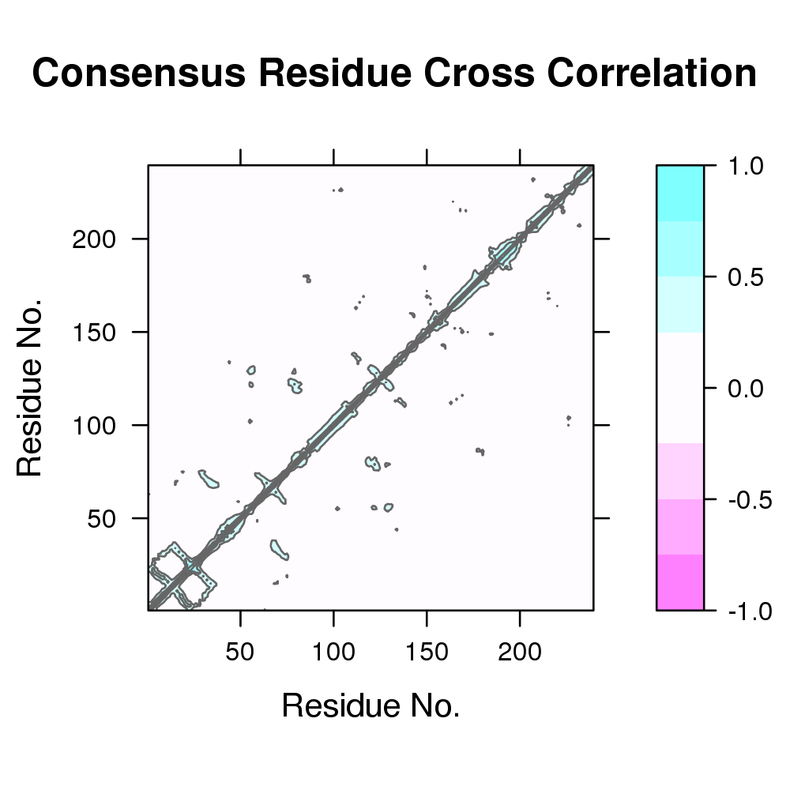

Atomic Correlation Matrix Consensus Filtering
Usage
dccm(x, cutoff.sims = dim(x)[3], cutoff.cij = 0.4, ...)
Arguments
- x
- A numeric array with 3 dimensions ‘(NxNxZ)’ containing atomic correlation values for N residues or atoms from Z calculations.
- cutoff.sims
- A single element numeric vector corresponding
to the minimum number of Z dimensions (i.e. dccm matrices) a
correlation between two residues must be present and whose absolute
value must be higher than
cutoff.cij. If not, the matrix element will be set to 0 and not used for the average calculation. - cutoff.cij
- A single element numeric vector corresponding to the minimum absolute value a correlation element must be equal to or higher to be used for the average calculation. If lower, the element will be set to 0 and not used for the average calculation.
- ...
- extra arguments that are currently ignored.
Description
Filter a three-dimensional correlation matrix, or DCCM, composed of results from multiple dccm calculations and return correlations present in at least a chosen subset of the calculated matrices.
Value
Returns a numeric ‘NxN’ atomic correlation matrix of class ‘dccm’.
References
Grant, B.J. et al. (2006) Bioinformatics 22, 2695--2696.
Examples
# Select Protein Kinase PDB IDs ids <- c("4b7t_A", "2exm_A", "1opj_A", "4jaj_A", "1a9u_A", "1tki_A", "1csn_A", "1lp4_A") # Download and split by chain ID raw.files <- get.pdb(ids, path = "raw_pdbs")Warning message: ids should be standard 4 character PDB-IDs: trying first 4 characters... Warning message: raw_pdbs/4b7t.pdb exists. Skipping download Warning message: raw_pdbs/2exm.pdb exists. Skipping download Warning message: raw_pdbs/1opj.pdb exists. Skipping download Warning message: raw_pdbs/4jaj.pdb exists. Skipping download Warning message: raw_pdbs/1a9u.pdb exists. Skipping download Warning message: raw_pdbs/1tki.pdb exists. Skipping download Warning message: raw_pdbs/1csn.pdb exists. Skipping download Warning message: raw_pdbs/1lp4.pdb exists. Skipping downloadfiles <- pdbsplit(raw.files, ids)| | | 0% | |========= | 12% | |================== | 25% | |========================== | 38% | |=================================== | 50% | |============================================ | 62% | |==================================================== | 75% | |============================================================= | 88% | |======================================================================| 100%# Alignment of structures pdbs <- pdbaln(files) # Sequence identityReading PDB files: split_chain/4b7t_A.pdb split_chain/2exm_A.pdb split_chain/1opj_A.pdb split_chain/4jaj_A.pdb split_chain/1a9u_A.pdb split_chain/1tki_A.pdb split_chain/1csn_A.pdb split_chain/1lp4_A.pdb ........ Extracting sequences muscle -in /tmp/RtmpyefGEQ/filec1776e871227 -out aln.fa -quiet -seqtype protein pdb/seq: 1 name: split_chain/4b7t_A.pdb pdb/seq: 2 name: split_chain/2exm_A.pdb pdb/seq: 3 name: split_chain/1opj_A.pdb pdb/seq: 4 name: split_chain/4jaj_A.pdb pdb/seq: 5 name: split_chain/1a9u_A.pdb pdb/seq: 6 name: split_chain/1tki_A.pdb pdb/seq: 7 name: split_chain/1csn_A.pdb pdb/seq: 8 name: split_chain/1lp4_A.pdbsummary(c(seqidentity(pdbs)))Min. 1st Qu. Median Mean 3rd Qu. Max. 0.1520 0.2010 0.2530 0.3402 0.3150 1.0000# NMA on all structures modes <- nma.pdbs(pdbs, full = TRUE)| | | 0% | |========= | 12% | |================== | 25% | |========================== | 38% | |=================================== | 50% | |============================================ | 62% | |==================================================== | 75% | |============================================================= | 88% | |======================================================================| 100%# Calculate correlation matrices for each structure cij <- dccm(modes)| | | 0% | |========== | 14% | |==================== | 29% | |============================== | 43% | |======================================== | 57% | |================================================== | 71% | |============================================================ | 86% | |======================================================================| 100%# Set DCCM plot panel names for combined figure dimnames(cij$all.dccm) = list(NULL, NULL, ids) plot.dccm(cij$all.dccm)Loading required package: lattice Attaching package: ‘lattice’ The following object is masked from ‘package:multicore’: parallel Loading required package: grid
# Filter to display only correlations present in all structures cij.all <- dccm.mean(cij$all.dccm, cutoff.sims = 8, cutoff.cij = 0) plot.dccm(cij.all, main = "Consensus Residue Cross Correlation")